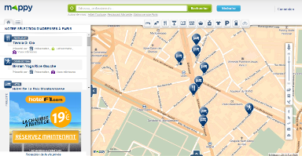
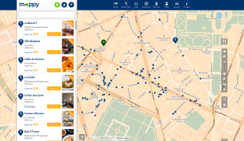

Nouvelle version du site, nouvelle cartographie
En mai 2014, une nouvelle version du site Mappy a vu le jour :

Précédente version (4)

Nouvelle version (5)
Cette version a entraîné bon nombre de refactoring technique (comme un passage à Backbone par exemple) dont le plus impactant fût la décision de remplacer l’API cartographique JavaScript historique par Leaflet.
Leaflet est une API de cartographie JavaScript OpenSource parmi les plus connues et actives. Utilisée par de nombreux sites importants, aussi bien généralistes (Flickr, Foursquare, Pinterest) que spécialistes de la cartographie (Mapbox, OpenStreetMap), elle dispose de plus de 175 contributeurs.
La compatibilité de la cartographie Mappy avec Leaflet
Notre plateforme cartographique dispose de certaines spécificités par rapport aux standards actuels :
- une projection Gall,
- des tuiles de 384 pixels de large (au lieu des 256 généralement utilisés par les autres acteurs cartographique),
- 13 niveaux de zoom, avec un facteur 3 entre chaque niveau (au lieu de 20 niveaux et d'un facteur x2).
Elles ont été intégrées sous la forme d’un plugin Leaflet, inspiré du plugin Mapbox. Ce plugin étend l’API Leaflet et intègre également d’autres méthodes pour effectuer des recherches géographiques, des recherches géographiques inversées (Retrouver une adresse depuis des coordonnées) et enfin des recherches d’itinéraires via les services de Mappy.
Utilisée aujourd’hui par le site fixe, le site mobile et le widget, cette API est également distribuée aux partenaires. Si vous êtes intéressés, je vous invite à consulter la page dédiée à intégration de nos services dans vos produits.
Contributions
Depuis cette migration à Leaflet, nous avons apporté quelques contributions sous la forme de “pull request” ou de nouveau plugin (leaflet-active-area, un prochain article le présentera en détail).
A l’avenir
Au final, ce passage à Leaflet ne nous apporte que des avantages et nous avons hâte de proposer d’autres “pull requests” ou plugins.
Autre avantage à l'utilisation de Leaflet, la migration vers des projections plus standard - un de nos projet 2015 - aura un très faible coût, et aucune migration d'API ne sera nécessaire.